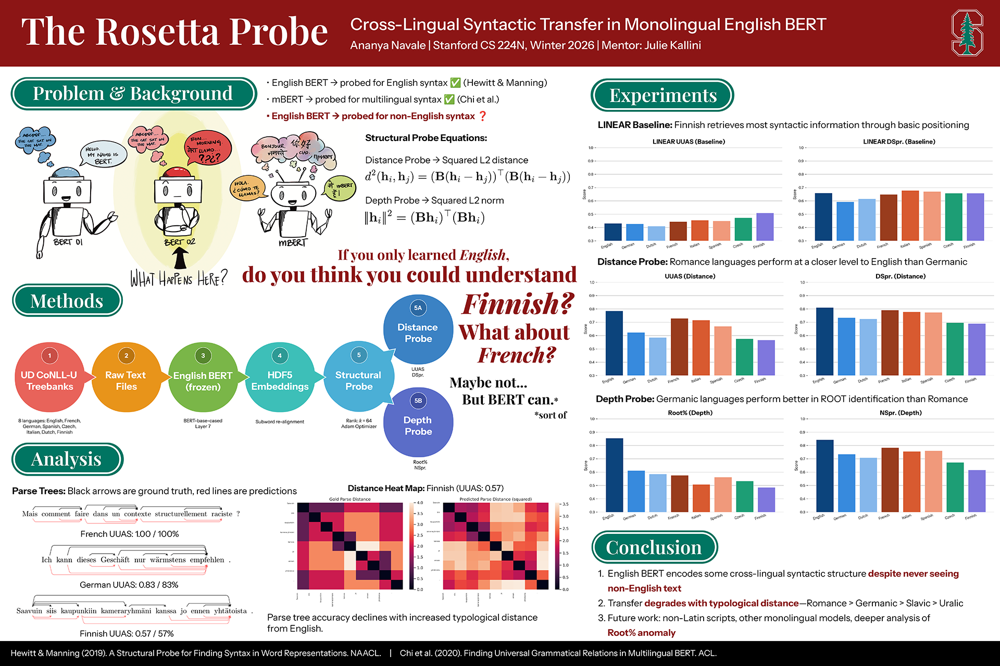

Research · NLP · Linguistics
Probing whether English BERT's syntactic geometry silently encodes the grammar of languages it has never seen.
If a language model learns the grammatical rules of one language, does it implicitly learn something universal about language itself? This paper investigates what English BERT – trained exclusively on English text – latently encodes about the syntax of other languages.
Applying the structural probe framework to eight languages (English, French, Spanish, Italian, German, Dutch, Czech, and Finnish) using a single frozen English BERT model, I find that BERT's syntactic geometry transfers cross-lingually to a surprising degree – with probe performance degrading as typological distance from English increases. Germanic languages consistently outperform Romance languages on root identification accuracy, suggesting the geometric encoding reflects language family structure in addition to typological proximity.